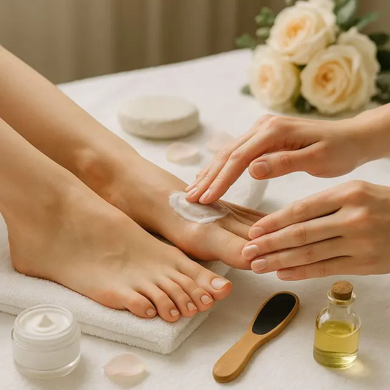

El Ritual de Bienestar Más Completo para tus Pies en Pachuca
El spa terapéutico para pies de Podóloga Aurora no es un servicio de belleza común ni una consulta médica de rutina, sino la unión más completa entre la precisión clínica de la podología y el consentimiento de un spa, donde cada fase del ritual prepara la siguiente para que los beneficios se sumen.
Es el servicio que más nos piden y el favorito de quienes quieren un cambio real en sus pies: salud, relajación profunda, piel renovada y cuidado clínico preventivo en una sola sesión de 60 a 90 minutos en Pachuca, Hidalgo, una inversión en bienestar con resultados que se sienten y se ven.
¿Por qué es “terapéutico” y no solo “relajante”? Porque además del bienestar cada fase cumple un objetivo clínico: el baño termal activa la circulación, la exfoliación renueva la piel y prepara los tejidos, el cuidado podológico previene y atiende lo que encuentre, el masaje suelta contracturas y ayuda al retorno venoso, y la hidratación sellante protege y nutre la piel, relajación con resultados que se notan.

Las 6 Etapas del Ritual de Spa Terapéutico en Podóloga Aurora
Cada fase tiene un objetivo claro y se enlaza de forma natural con la siguiente, para un cuidado completo y equilibrado:
- Etapa 1 — Baño termal preparatorio: inmersión en tina de hidromasaje con agua a temperatura controlada, sales minerales y aceites esenciales. Ablanda la piel, activa la circulación periférica y prepara los tejidos para recibir los tratamientos siguientes en las mejores condiciones
- Etapa 2 — Exfoliación podológica: remoción de células muertas con exfoliante dermatológico y fresa eléctrica podológica en zonas de mayor acumulación. Deja la piel nueva, activa y con máxima capacidad de absorción para las etapas siguientes
- Etapa 3 — Cuidado clínico preventivo: Se realiza el corte técnico de uñas, retiro de cutícula y evaluación del estado de los pies. Si detecta alguna alteración en curso —inicio de uña encarnada, hongo incipiente o callo de riesgo— lo atiende en ese momento sin necesidad de una cita aparte
- Etapa 4 — Mascarilla de hidratación activa: aplicación de mascarilla con ingredientes de alta concentración bajo envoltura térmica. El calor abre los tejidos y permite que los principios activos —ácido hialurónico, ceramidas, manteca de karité— penetren en profundidad en la piel recién exfoliada
- Etapa 5 — Masaje terapéutico con aceites: masaje de 20 a 25 minutos sobre toda la estructura del pie y el tobillo con aceites esenciales seleccionados según el objetivo: relajación, activación circulatoria o recuperación muscular. Libera tensiones acumuladas, mejora el retorno venoso y genera una sensación de bienestar que se extiende a todo el cuerpo
- Etapa 6 — Hidratación sellante de larga duración: cierre del ritual con crema de urea de alta concentración que fija la hidratación conseguida en las etapas anteriores y crea una barrera protectora que mantiene la piel suave y nutrida durante días
¿Para Quién es Ideal el Spa Terapéutico para Pies en Pachuca?
Este ritual le va a cualquiera que quiera un cuidado completo de sus pies, aunque está especialmente indicado para:
- Personas con jornadas laborales largas de pie o caminando que acumulan tensión y cansancio en piernas y pies al final del día
- Quienes buscan una experiencia de bienestar completa como regalo, autocuidado o desconexión del estrés cotidiano
- Pacientes que quieren unir el cuidado clínico preventivo con la experiencia de spa en una sola visita eficiente
- Personas que no han dado mantenimiento a sus pies en un tiempo prolongado y buscan un reinicio completo
- Deportistas en período de recuperación que necesitan un tratamiento que alivie la sobrecarga muscular y renueve la piel sometida a alta fricción
- Quienes tienen eventos especiales próximos —bodas, viajes, vacaciones— y quieren llegar con los pies en su mejor estado
Lo que Diferencia Nuestro Spa Terapéutico de Cualquier Otro en Pachuca
En Pachuca hay muchos lugares con spa de pies, y esto es lo que hace diferente venir a Podóloga Aurora:
- Supervisión profesional real: Se está presente durante todo el ritual, no solo al inicio. El cuidado clínico no es un complemento decorativo, es el eje del tratamiento
- Diagnóstico incluido: durante la etapa 3 evaluamos el estado actual de tus pies y atendemos cualquier hallazgo en el momento, sin costo adicional por la consulta
- Productos de grado dermatológico: los exfoliantes, mascarillas y cremas que usamos son de líneas profesionales no disponibles en comercio convencional, con concentraciones de principios activos significativamente más altas
- Personalización real: el aceite del masaje, la mascarilla y la intensidad de cada etapa se adaptan a tu tipo de piel, condición de tus pies y el objetivo que buscas en esa sesión específica
- Bioseguridad garantizada: todo el instrumental que contacta tu piel está esterilizado en autoclave. Algo que en un spa convencional no siempre está garantizado
Ideal para regalar: el spa terapéutico para pies es de los regalos más apreciados en fechas especiales, y si quieres regalárselo a alguien, escríbenos por WhatsApp y te ayudamos a coordinar la cita y preparar el detalle.